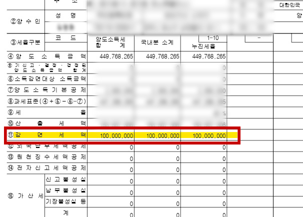
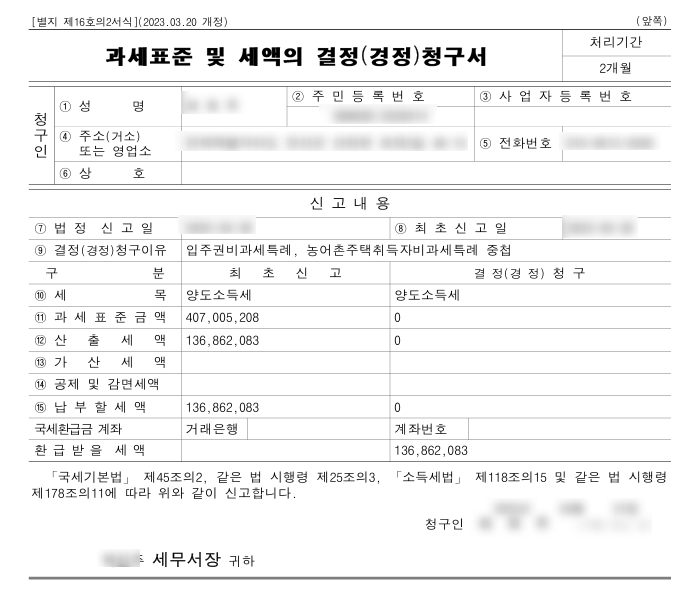
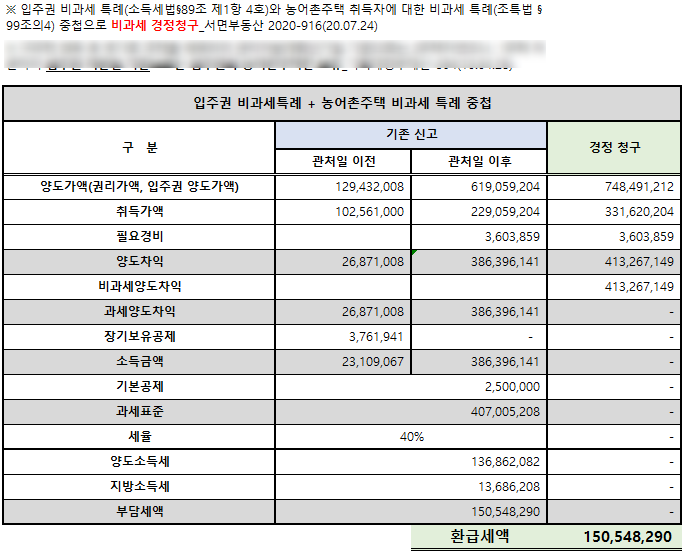
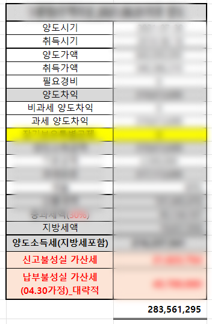

CASES · 절세 사례
결과로 증명합니다.

양도소득세 · 감면 적용1억 원 절세

양도소득세 · 경정청구1.4억 원 환급

비과세 특례 중첩 · 경정청구1.5억 원 환급

양도소득세 · 가산세 포함2.8억 원 절세
* 개인정보는 가림 처리되었습니다. 카드를 누르면 원본 이미지를 볼 수 있습니다.
ABOUT · 소개
'분석하는 세무사'
'분석하는 세무사'
세무회계 센츄리를 소개합니다.
세무회계 센츄리는 '진짜 분석'을 기반으로 철저히 다진 시스템과 확고한 철학으로 운영하며, 모든 온라인 상담은 철저한 검토 및 분석 후 대표 세무사가 직접 응대해 드립니다.
ANALYSIS
진짜 분석
지금은 천편일률적인 세무 전략의 시대가 아닙니다. 개개인의 상황을 세부적으로 파악해 맞춤 특화된 1:1 세무전략을 세웁니다.
VALUE
진짜 가치
세무서비스는 저렴하다고 좋은 것이 아닙니다. 법의 테두리 안에서 최소한의 리스크로 최대한의 절세를 이끌어 냅니다.
SAVING
진짜 절세
불가능한 허풍성 마케팅으로 고객의 환심을 사지 않습니다. 실제로 적용해볼 수 있는 전략을 세웁니다.
조묘진 대표 세무사
- 現) 세무회계센츄리
- 前) 세무법인다솔 1지점 근무
- 前) 세무법인혜움 근무
- 前) 세무법인더원 근무
이제 '진짜 분석'이 없다면
세금을 이길 수 없는 시대입니다.
개개인 상황에 알맞는 전문적 조언을 약속합니다.
RESERVE · 상담예약
한 분 한 분
한 분 한 분
상세하게 검토합니다.
희망 시간대를 남겨 주시면 대표 세무사가 직접 연락드립니다.
카톡으로 문의 메시지를 남겨 주시면, 한 분 한 분 순차적으로 상세히 검토 후 답변드립니다.
카카오톡으로 문의하기